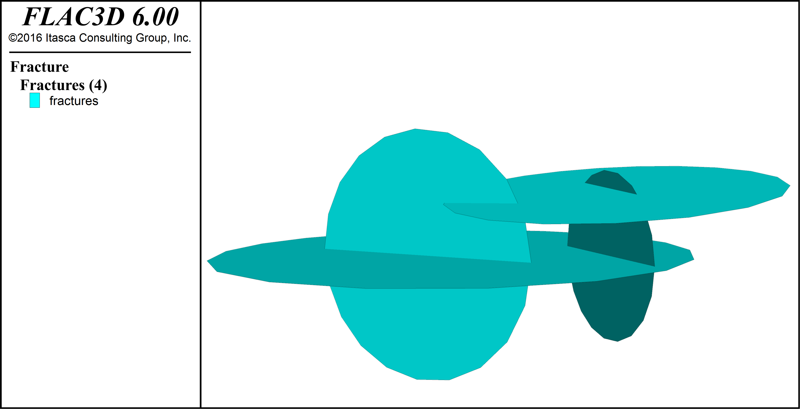
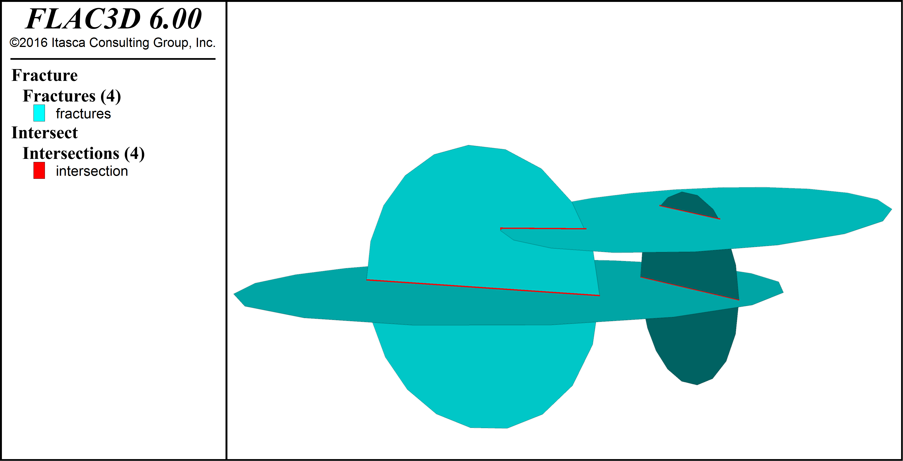
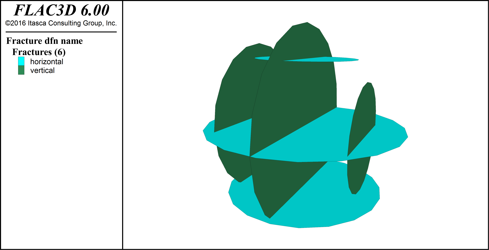
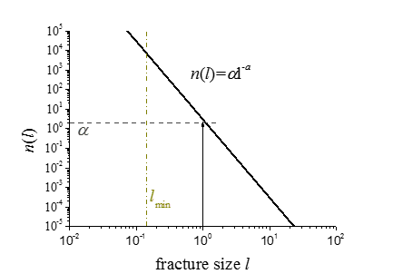
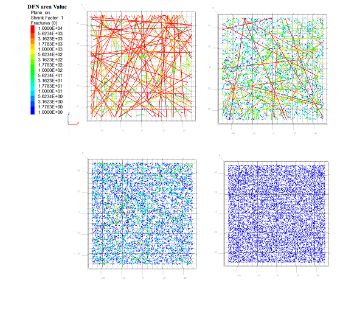

概述
基础模型组件
DFN 逻辑的基础模型组件是裂隙和交线。以下各节 详细描述这些对象，然后讨论创建裂隙集（称为 DFN）的方法。
裂隙
裂隙被建模为离散的、平面的、有限尺寸的单元。三维中默认裂隙
为圆盘状，但也可以是平面凸多边形。此时，顶点对象指
平面凸多边形的顶点。在二维中，裂隙用线段建模，
顶点对象指线段端点。尺寸和方位已知的确定性裂隙
用 创建裂隙命令（fracture create） 命令或 创建裂隙（fracture.create） FISH 内置函数创建。裂隙只能存在于模型域内（更多信息见
设置模型域命令（model domain） 命令）。下图给出用 创建裂隙命令（fracture create） 命令创建的一组圆盘状
裂隙。


图 1：确定性裂隙。
交线
交线对象是一条裂隙与直线、
平面多边形、平面多边形凸集或另一条裂隙相交的结果。交线对象用
{二维中为点；三维中为线段或相邻线段的集合}建模。下图给出通过 计算裂隙交点命令（fracture intersections compute） 命令在上文所示
确定性裂隙之间计算得到的交线。裂隙交线被归入交线集以便处理。
例如，可以既确定裂隙之间的交线，也确定
裂隙与钻孔模型之间的交线；这些交线可存入不同的交线集以便后续
处理。


图 2：确定性裂隙之间的交线。
生成随机裂隙集或 DFN
DFN 是裂隙的集合。在上图中，只有一个由四条 用户指定裂隙组成的 DFN。可同时存在多个 DFN（或称裂隙集）， 但任一条裂隙只能属于一个 DFN。下图给出两个由 确定性裂隙组成的 DFN，一个由水平裂隙组成，一个由垂直裂隙组成。 把裂隙分成不同的 DFN，对涉及具有不同特征的不同裂隙集的计算可能有用 （即本例中的水平与垂直裂隙 集）。随机裂隙在独立的 DFN 中生成，如下文所述。


图 3：由水平和垂直裂隙组成的两个 DFN（或称裂隙集）。
裂隙的随机描述——裂隙模板
在岩体中，常常无法直接确定贯穿岩体的裂隙的尺寸、方位和
频率。取而代之的是用地质测绘和/或地球物理
方法估计裂隙特征。检查现场数据后，
可确定裂隙尺寸、位置和方位的界限。裂隙模板保存
这些统计参数，并用于以 生成裂隙命令（fracture generate）
命令生成随机裂隙。具体而言，裂隙模板包含裂隙的尺寸、位置和方位
分布的描述；它用 创建裂隙模板命令（fracture template create） 命令创建。因此
裂隙模板是一组裂隙的随机表示，可用于生成
任意多个具体的裂隙实现。
随机建模方法
用于生成裂隙的建模方法是随机的：裂隙的几何特征 （通常由现场数据获得）通过其几何属性的独立统计分布 （即分布类型及相关参数）来约束。这些信息 存储在裂隙模板中。裂隙模板目前支持的几何特征 为裂隙尺寸（直径）、方位和位置分布。由一个裂隙 模板可生成任意多个不同的裂隙实现，具体取决于随机 种子。
裂隙尺寸密度分布
裂隙尺寸密度分布定义单位体积内的裂隙数 \(n(l)\)， 其尺寸在 \([l; l+dl]\) 范围内。它综合了裂隙尺寸概率分布 函数和密度项。对幂律分布，其关系为
其中 \(a\) 是标度指数（由于幂律指数恒为负，等于 -\(a\)， 故标度指数为正），\(\alpha\) 是模型的密度项。分布介于 \(l_{min}\) 与 \(l_{max}\) 之间。 它们分别是裂隙尺寸的下界和上界。注意，由于分布不一定在上界方向有界， \(l_{max}\) 可为无穷大。\(a\) 在任何尺度上精确固定了较小与 较大裂隙尺寸之间的比例。它通常在 \([3;4]\) 范围内。在对数-对数图上绘制时， \(n(l)\) 呈现为一条直线（见 图 4（Figure 4）），其表观斜率为 -\(a\)。

图 4：对数-对数图上的幂律分布。
幂律模型涵盖端元模型，例如当 \(a\rightarrow \infty\) 时尺寸恒为 \(l_{min}\) 的模型，或当 \(a \leq 2\) 时含无限大裂隙的模型。当 \(a\) 增大时，小裂隙相对于大裂隙的比例增大（图 5（Figure 5））。

图 5：在 \(L=100\) 的立方体中生成的 3D DFN 的 2D 露头，其中 \(l_{min}=1\)、\(l_{max}=100\) 和 \(d_m=1\)（见 表 1（Table 1）），从左到右、从上到下依次为 \(a=2\)、\(a=3\)、\(a=4\) 和 \(a\rightarrow \infty\)。
项 \(\alpha\) 按裂隙尺寸范围固定总裂隙密度。总裂隙密度 （见下文）还取决于所考虑的裂隙尺寸范围。尺寸在 \([l; l+dl]\) 范围内、在特征尺寸为 \(L\) 的体积中的裂隙总数 定义为 \(N(l,L)\)（例如 \(N(l,L)=\alpha \cdot l^{-a}\cdot L^3\)）。
若域为立方体，则 \(L\) 就是立方体的边长。尺寸介于 \(l_1\) 与 \(l_2\) 之间的裂隙数 由下式给出
定义尺寸大于给定值 \(C(l)\) 的裂隙数量的累积裂隙尺寸 密度分布，由下式定义
可以看到，若标度指数足够大（例如 \(\geq 4\)），相应的裂隙 群以最小裂隙为主。换言之，若 \(a\geq 4\)，则 \(l^{-a+1}\) 随 \(l\) 迅速 减小。幂律模型并非裂隙模板中唯一可用的尺寸分布。 高斯、均匀和自举（来自文件）分布也可用。 用户还可用 FISH 定义自定义分布。
密度
裂隙密度最常见的定义与单位体积内裂隙的总表面（质量）有关。在三维中，裂隙质量密度是单位体积内的裂隙总表面积 （\(d_m\) 或 \(P_{32}\)）。 在二维中，它是单位面积内的裂隙总长度（\(P_{21}\)）。在一维中，它是裂隙频率 （\(f\) 或 \(P_{10}\)）：单位扫描线长度上的裂隙交点数。裂隙 密度也可定义为裂隙中心密度：单位体积内的裂隙中心数 （\(d_c\) 或 \(P_{30}\)）。这些定义见 表 1（Table 1）。为 简化 DFN 模块的建模，所需密度（即裂隙生成的输入）由 质量密度、中心密度或裂隙频率之一确定， 它们各自依赖样本估计值。对任何给定的初始密度，裂隙 位置的空间分布来自 Poisson 过程，从而使整个体积内的裂隙位置均匀。
| 名称 | 单位 | 含义 | 与裂隙尺寸分布的关联 |
|---|---|---|---|
| 质量密度 （\(dm\) 或 \(P_{32}\)） | \(m^2/m^3\) | 单位体积上的裂隙累积表面积 | \(d_m(l_c)\cong \int_{l_c}^\infty n(l)\cdot l^2\cdot L^{-3}\cdot dl\) |
| 露头上的质量密度 （\(P_{21}\)） | \(m/m^2\) | 单位表面积上的裂隙累积长度 | \(P_{21}(t_c)\cong \int_{t_c}^L n(t,L)\cdot\cdot L^{-2} dt\)。 \(t\) 是在二维露头上观测到的裂隙迹线。 |
| 裂隙频率 （\(f\) 或 \(P_{10}\)） | \(m^{-1}\) | 单位长度上的裂隙数（N） | \(f(l_c)\propto K_{ori}\cdot d_m(lc)\)。 \(K_{ori}\) 取决于一维扫描线或钻孔的方位与 DFN 方位分布。在方位均匀 （无优势方向）情形下，\(K_{ori}=0.5\)。 |
| 中心密度 （\(d_c\) 或 \(P_{30}\)） | \(m^{-3}\) | 单位体积内的裂隙中心数 | \(d_c(l_0)=\int_{l_0}^L n(l)\cdot L^{-3}\cdot dl\) |
| 裂隙间距 | \(m\) | 裂隙频率的倒数 沿一维直线的平均裂隙间距 | \(\text{spacing}(l_c)=\frac{1}{f(l_c)}\) |
| 渗流参数 | \(m^3/m^3\) | 单位体积内裂隙周围的累积排斥体积 | \(d_m(l_c)\cong \int_{l_c}^\infty n(l)\cdot l^3\cdot L^{-3}\cdot dl\) |
裂隙密度是一种尺度平均性质，即裂隙密度估计值及相关 分布取决于观测区域的位置和尺度。当观测尺度趋于零时，它们可反映局部变化； 当测量尺度趋于 \(\infty\) 时，它们可定义整体或宏观性质。裂隙尺寸密度分布的参数 \(a\)、\(\alpha\)、\(l_{min}\)、\(l_{max}\) 完全确定了裂隙的整体密度。然而，现场观测的 裂隙密度数据取自有限尺寸样本，例如钻孔段、扫描线或露头图， 因而与其样本支撑有关。它们可能局部不同于整体 裂隙密度。此外，由于小尺寸处的分辨率效应 以及较大尺寸处的删失和截断，它们只与有限的裂隙尺寸范围有关。
| 这些内容对您有帮助吗？… | FLAC3D © 2019, Itasca | 原文更新于 2020 年 10 月 8 日 |